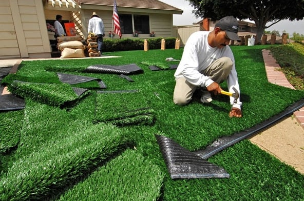

How to Install Your Own Turf
Make That Lawn Shine
Before any turf touches the ground, clear debris and smooth the soil. This helps ensure each roll of turf lays flat and roots properly.
Four-Step Process
- Level and lightly moisten your soil.
- Roll out the turf strips edge to edge.
- Press seams together so there are no gaps.
- Water the new turf generously (but don't flood it).

Once it's all down, keep the turf moist for the first couple of weeks. Gradually reduce watering once you see it's taking root.
Extras
- A gentle fertilizer can boost early growth.
- Minimize foot traffic for a bit. Give those roots time!
- Trim edges neatly to avoid fraying.
Enjoy Your New Green Oasis!
If you want a deeper look at why turf is so beneficial, head back to our Turf Facts page or return Home.